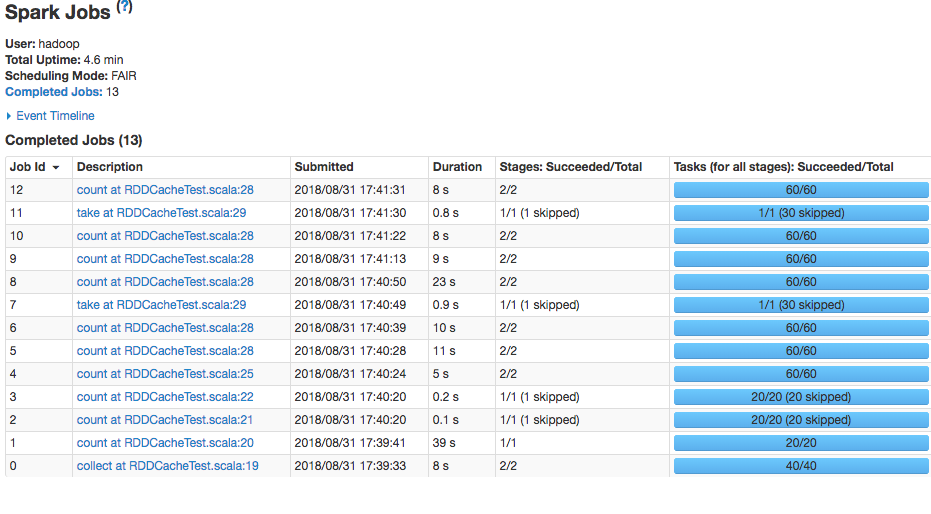
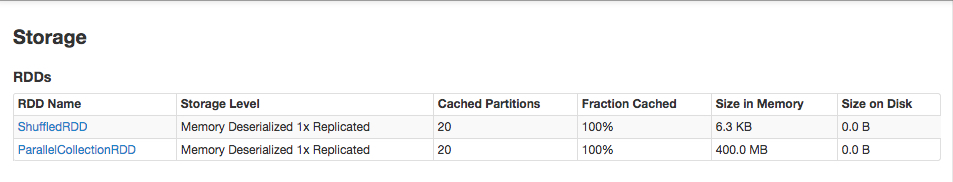

class: center, middle, inverse name: 标题页 ## [NetEase Spark Courses](https://netease-bigdata.github.io/ne-spark-courseware/) <br> <br> <br> <br> ## Apache Spark Garbge Collector --- ContextCleaner <br> <br> <br> <br> <img style="zoom: 1.0" src="../../imgs/mammut.png" align="bottom" /> ??? 备注：标题 <br> 帮助信息：在网页端按H键可进入帮助页面 --- class: inverse, center name: agenda # Agenda ## - ** About Me ** ## - ** 什么是 ContextCleaner？ ** <br> ** ContextCleaner 工作原理 ** <br> ** 什么时候需要关心 ContextCleaner？ ** <br> ** 如何配置 ContextCleaner？ **<br> ??? 备注: 目录<br> 本 TOPIC 内容包括Spark程序内部垃圾回收器（ContextCleaner）的相关介绍<br> --- class: inverse name: aboutme .left-column-inverse[ # About Me ] .right-column-inverse[ ## Kent Yao 2016年11月加入网易，目前在杭州研究院-数据科学中心担任资深大数据平台开发工程师，主导 Spark 作为核心计算框架在[网易大数据平台](https://bigdata.163yun.com/mammut)的相关研发及大规模应用工作。 前华为技术有限公司大数据技术开发部成员。 <br> GitHub: https://github.com/yaooqinn <br> <br> <br> <img style="zoom: 0.618" src="../../imgs/mammut.png" /> ] ??? 备注：个人简介 --- class: inverse name: why .left-column-inverse[ ## Why? ] .right-column-inverse[ <br> #### 缓存的 RDD 为啥重算了？ #### Shuffle 残留, Executor内存吃紧, 乃至磁盘被打爆？ #### 长时应用 Spark Streaming 间歇性停顿 #### 长稳服务 Thrift Server 响应缓慢 #### 一些Driver端的谜之停顿，甚至Hang住 #### 不小心 -XX:+DisableExplicitGC ] ??? Spark 作为一个JVM based分布式计算框架，我我们基于Spark编写的应用程序，也会遇到 --- class: inverse name: context cleaner overview .left-column-inverse[ ## What? ### Overview #### ContextCleaner ] .right-column-inverse[ #### 什么是 ContextCleaner？ ##### **Driver 端**异步清理线程 - 清理缓存过，但不再引用的 RDD - 清理该 RDD 对应的 ShuffleDependency 数据 - Driver 端 Shuffle 元数据 - Executor端 Shuffle 文件 - 伴生的Broadcast 元数据变量 - 以及 Broadcast、累加器变量、检查点数据 ##### 通过Java WeakReference机制来接受**垃圾回收器**通知进行变量的清理 #### 什么是 CleanupTask? ```scala private sealed trait CleanupTask /** 各种内部变量的清理任务 */ private case class CleanRDD(rddId: Int) extends CleanupTask private case class CleanShuffle(shuffleId: Int) extends CleanupTask private case class CleanBroadcast(broadcastId: Long) extends CleanupTask private case class CleanAccum(accId: Long) extends CleanupTask private case class CleanCheckpoint(rddId: Int) extends CleanupTask ``` ] --- class: inverse name: context cleaner overview .left-column-inverse[ ## What? ### Overview #### ContextCleaner #### CleanupTaskWeakRef... ] .right-column-inverse[ 什么是 CleanupTaskWeakReference？ ```scala /** * 封装 CleanupTask 的 WeakReference. 当 referent 指向的 object 变成弱引用, * 其被自动加入 ReferenceQueue. */ private class CleanupTaskWeakReference( val task: CleanupTask, referent: AnyRef, referenceQueue: ReferenceQueue[AnyRef]) extends WeakReference(referent, referenceQueue) ``` 1.注册 ```scala /** Register an object for cleanup. */ private def registerForCleanup(objectForCleanup: AnyRef, task: CleanupTask): Unit = { referenceBuffer.add(new CleanupTaskWeakReference(task, objectForCleanup, referenceQueue)) } ``` 2.可达性分析 referent 可达性变化 3.垃圾回收器将已注册的引用对象添加到 referenceQueue 中 4.我们拿到这个队列进行遍历，然后做些对应的清理工作 - CleanupTask ] ??? --- class: inverse name: context cleaner conponents .left-column-inverse[ ## What? ### Overview ### Conponents ] .right-column-inverse[ #### referenceBuffer ``` /** * A buffer to ensure that `CleanupTaskWeakReference`s are not garbage collected * as long as they have not been handled by the reference queue. */ private val referenceBuffer = Collections.newSetFromMap[CleanupTaskWeakReference](new ConcurrentHashMap) ``` <br> - 确保每个 CleanupTaskWeakReference 在被 ReferenceQueue 处理之前，自身不被回收掉 - 从而确保 RDD/Shuffle/Broadcast等对象被正确的清理 - 一旦开始清理, 就会把对 CleanupTaskWeakReference 引用移除 ] --- class: inverse name:context cleaner conponents .left-column-inverse[ ## What? ### Overview ### Conponents ] .right-column-inverse[ #### referenceQueue ``` private val referenceQueue = new ReferenceQueue[AnyRef] ``` <br> - ReferenceQueue 引用队列，在检测到适当的可到达性更改后，垃圾回收器将已注册的引用对象添加到该队列中 - 用于 CleanupTaskWeakReference 的构建, 通过这个队列我们可以在某个对象即将回收时，搞一些“事情” - ContextCleaner 通过这个队列遍历出那些 CleanupTaskWeakReference 引用, 进而进行清理 ] --- class: inverse name: context cleaner conponents .left-column-inverse[ ## What? ### Overview ### Conponents ] .right-column-inverse[ #### cleaningThread ``` private val cleaningThread = new Thread() { override def run() { keepCleaning() }} ``` ```scala /** Keep cleaning RDD, shuffle, and broadcast state. */ private def keepCleaning(): Unit = Utils.tryOrStopSparkContext(sc) { while (!stopped) { try { val reference = Option(referenceQueue.remove(ContextCleaner.REF_QUEUE_POLL_TIMEOUT)) .map(_.asInstanceOf[CleanupTaskWeakReference]) synchronized { reference.foreach { ref => referenceBuffer.remove(ref) ref.task match { case CleanRDD(rddId) => doCleanupRDD(rddId, blocking = blockOnCleanupTasks) ... case CleanBroadcast(broadcastId) => doCleanupBroadcast(broadcastId, blocking = blockOnCleanupTasks) ... } } } } ... } ``` 循环获取referenceQueue中的弱引用，根据 CleanupTask 进行对应清理 ] --- class: inverse name: context cleaner conponents .left-column-inverse[ ## What? ### Overview ### Conponents ] .right-column-inverse[ #### periodicGCService ``` private val periodicGCService: ScheduledExecutorService = ThreadUtils.newDaemonSingleThreadScheduledExecutor("context-cleaner-periodic-gc") ``` ```scala /** Start the cleaner. */ def start(): Unit = { ... periodicGCService.scheduleAtFixedRate(new Runnable { override def run(): Unit = System.gc() }, periodicGCInterval, periodicGCInterval, TimeUnit.SECONDS) } ``` ReferenceQueue 与 Spark 程序 Driver 端的 GC 有关 - 常规的GC - 自己调用System.gc - Spark 周期性的 System.gc ] --- class: inverse name: context cleaner conponents .left-column-inverse[ ## How? ### 栗子 ] .right-column-inverse[ ```scala object RDDCacheTest { def main(args: Array[String]): Unit = { val conf = new SparkConf() .setAppName(getClass.getSimpleName) .set("spark.cleaner.periodicGC.interval", "1min") // context cleaner val sc = new SparkContext(conf) val data = Seq.fill(1024 * 1024 * 100)(Random.nextInt(100)) val rdd1 = sc.parallelize(data, 20) rdd1.cache() // mark rdd 1 cache val rdd2 = rdd1.map((_, 1)).reduceByKey(_ + _) // word count val cachedRdd2 = rdd2.cache() // cache shuffled rdd rdd2.collect() // action actually trigger caching rdd1.count() // ditto rdd2.count() // rdd reuse cachedRdd2.count() // ditto rdd1.map((_, 1)).reduceByKey(_ + _).take(1) // rdd 1 reuse, not rdd 2 val rdd3 = sc.parallelize(data, 30) rdd3.map((_, 1)).reduceByKey(_ + _).count() // no rdd reuse 10.to(20, 2).foreach { i => val tmp = rdd3.groupBy(_ % i) tmp.cache().count() if (i % 3 == 0) tmp.take(1) } Thread.sleep(1000 * 60 * 10) sc.stop() } } ``` 上述例子中，我们简单的调用了RDD.cache, 引入Shuffle算子，再基于Spark自己对broadcast变量的利用，看下ContextCleaner的工作原理 ] --- class: inverse name: context cleaner conponents .left-column-inverse[ ## How? ### 栗子 ### 初始化 ] .right-column-inverse[ ``` val sc = new SparkContext(conf) ``` ⬇️ ```scala _cleaner = if (_conf.getBoolean("spark.cleaner.referenceTracking", true)) { Some(new ContextCleaner(this)) } else { None } _cleaner.foreach(_.start()) ``` 在默认情况下（spark.cleaner.referenceTracking=true），SparkContext实例化的时候为我们自动初始化ContextCleaner ] --- class: inverse name: context cleaner conponents .left-column-inverse[ ## How? ### 栗子 ### 初始化 ### cache ] .right-column-inverse[ ``` rdd1.cache() ``` ⬇️ ```scala /** * Mark this RDD for persisting using the specified level. * * @param newLevel the target storage level * @param allowOverride whether to override any existing level with the new one */ private def persist(newLevel: StorageLevel, allowOverride: Boolean): this.type = { // TODO: Handle changes of StorageLevel if (storageLevel != StorageLevel.NONE && newLevel != storageLevel && !allowOverride) { throw new UnsupportedOperationException( "Cannot change storage level of an RDD after it was already assigned a level") } // If this is the first time this RDD is marked for persisting, register it // with the SparkContext for cleanups and accounting. Do this only once. if (storageLevel == StorageLevel.NONE) { sc.cleaner.foreach(_.registerRDDForCleanup(this)) sc.persistRDD(this) } storageLevel = newLevel this } ``` 在默认情况下（spark.cleaner.referenceTracking=true），调用RDD.cache会将自身注册到ContextCleaner ] --- class: inverse name: context cleaner conponents .left-column-inverse[ ## How? ### 栗子 ### 初始化 ### cache ### shuffle ] .right-column-inverse[ ``` val rdd2 = rdd1.map((_, 1)).reduceByKey(_ + _) ``` ⬇️ ```scala class ShuffleDependency[K: ClassTag, V: ClassTag, C: ClassTag]( @transient private val _rdd: ...) extends Dependency[Product2[K, V]] { ... val shuffleId: Int = _rdd.context.newShuffleId() val shuffleHandle: ShuffleHandle = _rdd.context.env.shuffleManager.registerShuffle( shuffleId, _rdd.partitions.length, this) _rdd.sparkContext.cleaner.foreach(_.registerShuffleForCleanup(this)) } ``` 在默认情况下（spark.cleaner.referenceTracking=true），调用Shuffle过程中，会将自身注册到ContextCleaner PS: 之前提到了broadcast等 注册也都是大同小异的逻辑 ] --- class: inverse name: context cleaner conponents .left-column-inverse[ ## How? ### 栗子 ### 初始化 ### cache ### shuffle ### Job ] .right-column-inverse[  RDD的Cache可以大大的帮我提升程序的性能，滥用的话也可能影响性能 1. 过多cache，挤占计算资源 2. 清理时的压力 ] --- class: inverse name: context cleaner conponents .left-column-inverse[ ## How? ### 栗子 ### 初始化 ### cache ### shuffle ### Job ### Storage ] .right-column-inverse[ ``` Thread.sleep(1000 * 60 * 10) ``` ⬇️  主线程休眠的10分钟内： 1. for循环内的缓存的RDD都将变得可达性都会变化，都被我们的ContextCleaner回收 2. 它们对应的Shuffle缓存信息、文件(如果有)都会相应得到清理 3. 循环之外的两个RDD，一直存活 4. 它们对应的Shuffle缓存信息、文件(如果有)都将一直存在 ] --- class: inverse name: context cleaner conponents .left-column-inverse[ ## How? ### 栗子 ### 初始化 ### cache ### shuffle ### Job ### Storage ### Configuration ] .right-column-inverse[ ```scala spark.cleaner.referenceTracking 总开关 默认值：true spark.cleaner.referenceTracking.cleanCheckpoints 是否开启检查点数据的清理 默认值：false spark.cleaner.periodicGC.interval System.gc() 执行周期； 调节这个参数，一方面可以让 Driver 端的元数据（MapStatus）等，回收的更加顺滑 另一方面，可以及时触发 Executor 端 shuffle数据的及时清理 默认值：30min spark.cleaner.referenceTracking.blocking 标记清理线程是否在清理除Shuffle数据之外时阻塞 默认值：true spark.cleaner.referenceTracking.blocking.shuffle 标记清理线程在清理shuffle数据时是否阻塞 默认值：false ``` 阻塞： 清理线程需要等待所有 Executor 执行的结果 不阻塞： Driver 先狂发消息给 Executor 端， 接着就要被回来的消息淹没 ] --- class: inverse name: sub-agenda .left-column-inverse[ ## 推荐 ] .right-column-inverse[ #### Case Study: - [Debugging a long-running Apache Spark application: A War Story](https://tech.channable.com/posts/2018-04-10-debugging-a-long-running-apache-spark-application.html#footnote1) #### Spark Issues: - [SPARK-3015](https://issues.apache.org/jira/browse/SPARK-3015) - Removing broadcast in quick successions causes Akka timeout - 关于为什么清理时要blocking - [SPARK-3139](https://issues.apache.org/jira/browse/SPARK-3139) - Akka timeouts from ContextCleaner when cleaning shuffles - 关于为什么清理shuffle时为何不blocking - [SPARK-1855]（https://issues.apache.org/jira/browse/SPARK-1855）- Provide memory-and-local-disk RDD checkpointing - 关于为何不默认注册检查点数据的清理 ] --- class: middle, center, inverse name: greetings # Q & A --- class: middle, center, inverse name: greetings # Thank You! ### [Kent Yao] <img style="zoom: 1.0" src="../../imgs/mammut.png" align="bottom" /> <a rel="license" href="http://creativecommons.org/licenses/by-nc/4.0/"><img alt="Creative Commons License" style="border-width:0" src="https://i.creativecommons.org/l/by-nc/4.0/88x31.png" /></a><br />This work is licensed under a <a rel="license" href="http://creativecommons.org/licenses/by-nc/4.0/">Creative Commons Attribution-NonCommercial 4.0 International License</a>.